个人代表作介绍
这里介绍本人开发及维护都超过好几年的脚本和软件，其中auto-feed.js完全开源版本，可以直接上GitHub上查看。hudbt-autoseed软件有考虑过开源，但是因为可能引发不必要的混乱，仅在小范围内使用，所以将着重介绍。
一、auto-feed.js
这里仅仅展示该脚本在greasyfork的安装量以及GitHub的star数目：

具体的教程和介绍可以直接访问个人仓库：https://github.com/tomorrow505/auto_feed_js。
二、蝴蝶发布机
------------------------------------------------版权归属：华科HUDBT----------------------------------------------------------------------------
软件的使用原理就是——下载种子到本地，然后上传种子到qbittorrent的webui（不论qbittorrent部署在何种环境下，盒子，nas都是一样的）。不论是任务管理还是本软件任何与种子相关的操作，都是基于此。
登录qbittorrent的webui，输入远程主机，本地可以输localhost或者ip, 端口为自己设置的端口，账号密码之后点击登录。进入正常的软件界面：
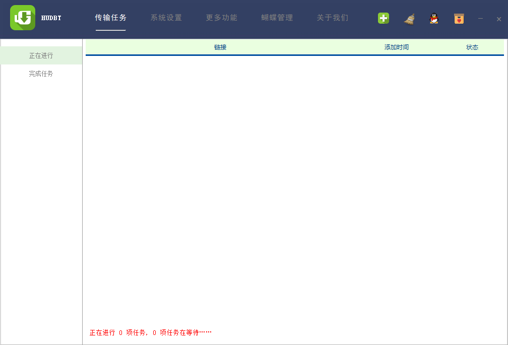
与之前不一样的是，取消了窗体头部和菜单，自定义头部和菜单。主要分为：
- 传输任务：主要是正在进行的任务和已经完成的任务。
- 系统设置：主要分为站点设置、软件设置、RSS设置、截图设置、远程Linux（待添加）
- 更多功能：获取简介（影片介绍，视频参数，截图信息——后两个目前只支持本地）、Reseed、UT移植、伺服管理
- 蝴蝶管理：（仅限蝴蝶工作人员使用）
- 关于我们：一些软件介绍
以及四个图标按钮——添加任务、清除缓存、联系qq群、赞助按钮。
1.软件介绍
下边对软件使用步骤进行介绍，我们会按照使用流程，所以跟上边的顺序会有一些不一样。
1.1 站点设置
首先需要知道软件主要用作搬运，也就是从一个站点到多个站点，即源站点和发布站点。无论是获取信息还是发布都需要cookie，其作用机理就不说了，就是跳过登录。

软件使用的是chromedriver作为驱动加载本地数据打开浏览器获取各个站点的cookie。 所以首先需要什么？驱动chromedriver。 在解压目录bin目录下已经有了一个版本，但不一定能通用，百度谷歌随便都可以找到对应自己浏览器的版本，下载下来替换即可。 然后需要的就是本地用户数据，需要提供本地用户数据路径，谷歌浏览器输入chrome://version/，查看个人资料路径 如：个人资料路径：C:\Users\xxx\AppData\Local\Google\Chrome\User Data\Default，将Default前的部分拷入chrome用户数据路径，也就是图中第一个版块。
上图分为四个版块，第二个版块是源站点配置区域，左边罗列的是支持的站点别名，右边表格中显示选中的站点，操作步骤就是左键双击添加即可——如果选择错误可以右键单击表格选择删除。
第四个版块用于设置发布站点，目前软件支持如上图12个站点。如果想要发布则进行勾选，完成后请按ctrl+s进行保存。一定要保存！！！！不然是没有效果的。
1.2 软件设置
首先是五个目录，前四个是下载目录，后一个是缓存目录。这个相对简单，软件根据获取的网页内容大致上分为几类资源，一方面为了有的硬盘多均衡一下，一方面方便管理，当然下载目录可以全部设置成一个目录。

说明：盒子或nas设置的时候前四个目录为盒子或nas对应的目录，最后一个一定设置在本地！！！因为种子文件需要下载在本地
后边的设置有六个：
是否匿名，即：发布的时候是否选择匿名发布，建议勾选
添加推荐，可以参考以前种鸡发布内容，是否在发布的时候添加相关推荐，建议勾选
自动登录，建议勾选，不需要弹出登录框自动登录。如果换了登录信息无法弹出登录框可以去conf目录下修改settings.json内容或者user_info.json修改登录信息。
过期种子不提示：默认添加进来的种子30天过期，如果不打标签为“保留”会提示是否删除。勾选之后不再提示此信息。
是否开启RSS：根据个人情况而定，搭配RSS设置使用。需要说明的是——相应的两个设置（时间间隔和最大种子）后一个相对好理解，就是RSS接受的最大的种子体积。前一个举例10分钟说明表示每10分钟刷新一次，获取过去10分钟内R到的种子添加进任务，适合长时间开启的模式；特别地，设置为0表示接受R链中所有的任务，并且10分钟刷新一次，所以需要获取到任务之后立即更改时间为非0数值并ctrl+s保存 。
此外：因为需要判断种子大小进行接收拒绝，在站点获取链接的时候记得勾选大小选项；如果R的链接比较多的话，可以修改默认的条数10为更小的值，如：1,2。如果想要快速重启RSS服务可以设置一个不同的值并保存，比如当前设置为30，可是某站点刚发布了一个内容，不想等待，可以设置为31会马上重启获取过去31分钟的任务，0只是特使情况下使用，链接多的时候甚至不建议使用
最大任务数：考虑到带宽甚至qbittorrent稳定性，设置最大任务数，当任务多于此数值时进入排队。
1.3 RSS设置
这一部分相对简单，按照下方提示即可

1.4 截图设置

这个功能暂时只支持本地视频文件。熟悉的应该不用怎么介绍，先随便选，然后签名内容设置成自己的id，字体定位到本机的ttf文件，大小和位置——位置第一个参数需要调整，其他保持即可。也可以根据喜好调整。不要忘记ctrl+s。
1.5 传输任务
1.5.1 添加任务
源站点和发布站点都设置好了，就可以开始进行发布任务了。

首先：添加任务——两种方式，ctrl+p或者表头“+”号按钮，个人倾向于第一种。原理是通过种子详情链接获取到网页具体内容，进行解析（包括上传到其他站点需要的信息、简介补全、图片检验补全等等）需要较长时间，然后根据解析的内容获取种子下载链接下载到缓存目录，然后解析种子，并下载到相应目录。下载完成后完成发布，期间可以右键进行相应的操作。
如果操作不当，可能会弹出不支持的站点、非法的链接、重复的链接或者已完成的链接等提示。
注意，以前添加过的种子会校验然后程序会修改其保存目录，删除任务的时候如果qbittorrent已经下载完成，不会删除资源，如果没有完成，则会连带下载任务一并删除
1.5.2 可能会遭遇的错误
任务进行是可能会遇到一些错误，再此汇总一下，可能不全面，后边会补充。
- 任务丢失：因为任务需要下载完成进行发布，所以在下载过程中需要与qbittorren进行通信，通信的关键就是哈希值即：hashinfo，有的站点会提供哈希值，有的不提供，需要代码获取，有时候获取到的哈希值和qbittorrent里的对不上导致任务丢失，这一类的原因较少。还有一类原因就是通信断开，这一类错误基本已经修复。
- 网页解析错误：基本上就是获取到的详情页链接不是一个详情页链接，也就是登录错误获取到的信息，基本上可以去检查cookie了。cookie信息保存在conf目下的site_info.json里。
- 重新加载：这个表示qbittorrent掉了，本地出现情况少，可能是远程连接不稳定导致的。
- 源种子下载错误：这一类的错误也比较少，基本可以忽略。
碰到上述问题一般两种操作，删除重新添加任务或者软件重启。@-@
1.6 完成任务
完成的任务线程就会结束然后释放内存，任务部分信息会保存在db目录下的数据库里，开启软件会自动加载到完成目录里，可以在该界面下右键进行相应的操作。

1.7 任务备份与重添加
这一部分没有什么好说的，在软件正常关闭的前提下，会将未完成的任务进行备份加到数据库里，下次打开的时候就会逐条加进来。不需要人为操作。
2、 更多功能
2.1 获取简介

这一部分有三个子模块——影片介绍，视频参数，截图信息。
2.1.1 影片介绍
这一部分主要是根据豆瓣/imdb/种子详情页信息获取简介内容，以https://movie.douban.com/subject/26384493/ 为例：
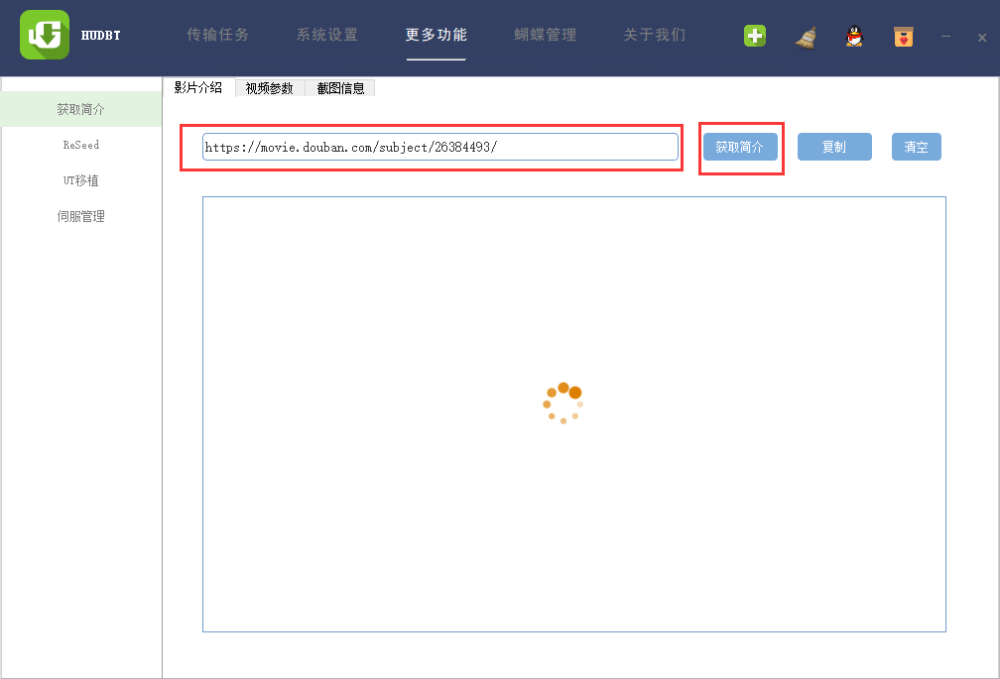
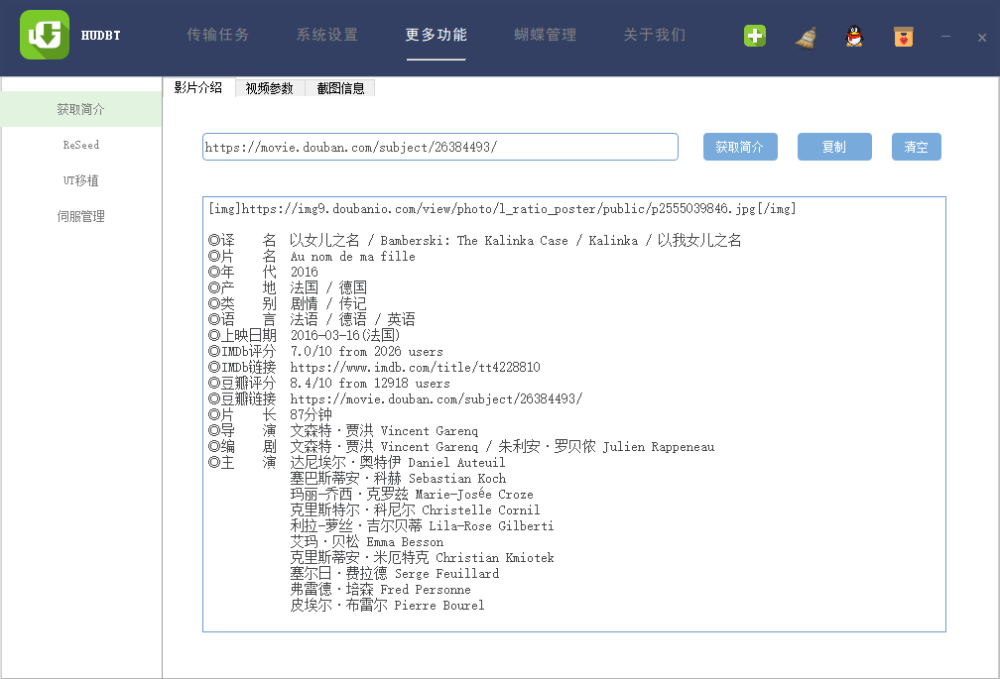
这一功能调用豆瓣api的部分代码参考了R酱大佬的工具，在此表示感谢！！！
2.1.2 视频参数
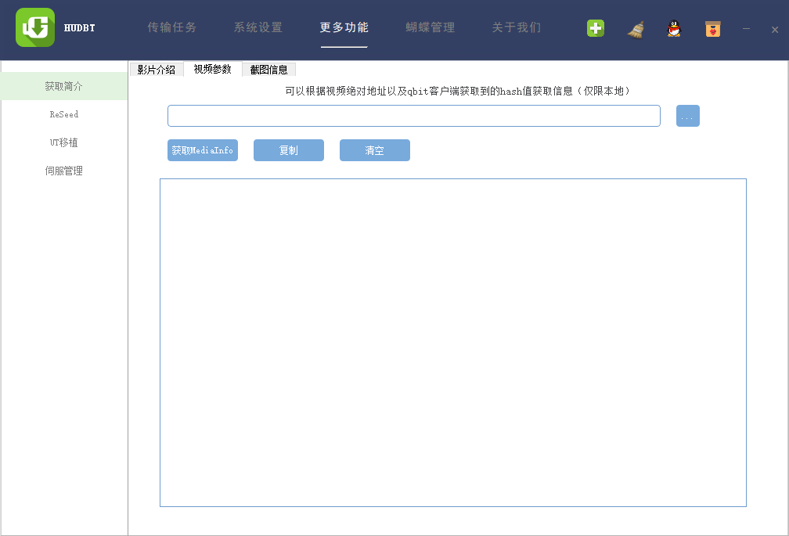
这一部分参考了一个视频参数转换网站，可以获取简洁的mediainfo信息，可以直接定位到视频文件，也可以通过qbittorrent获取哈希值扫描保存目录下一层中找到视频文件，两层不支持——直接定位即可。（暂时支持本地）
qbittorrent右键复制哈希值，填写并点击获取：

2.1.3 截图信息

截图会保存在缓存目录下imgs目录里：（点击手动上传会打开对应目录并随机打开一个图床，自动就会自动上传到图床）


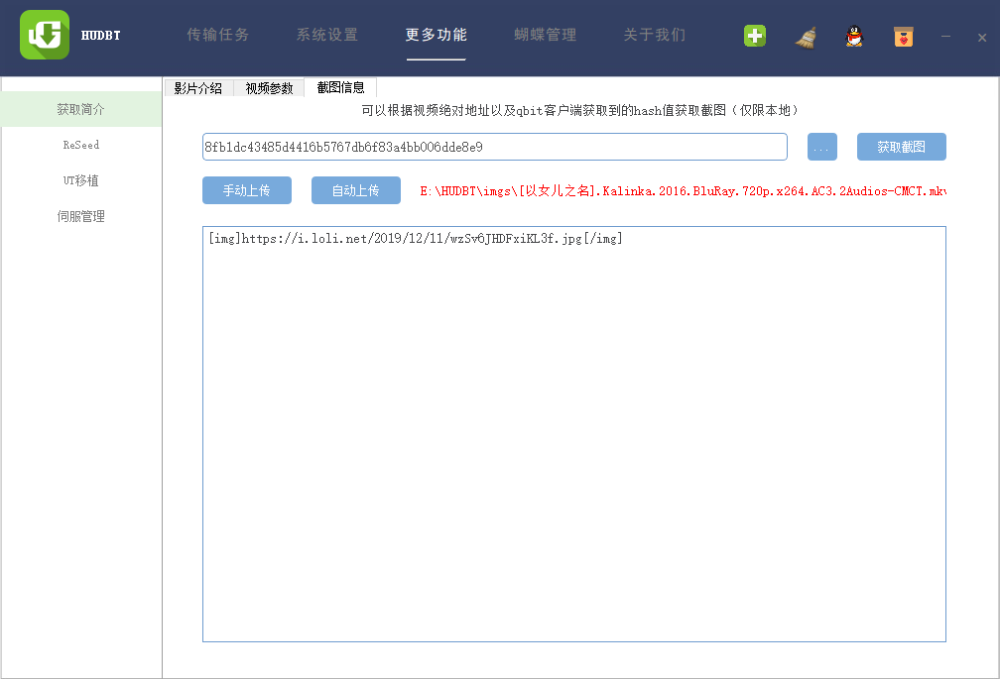
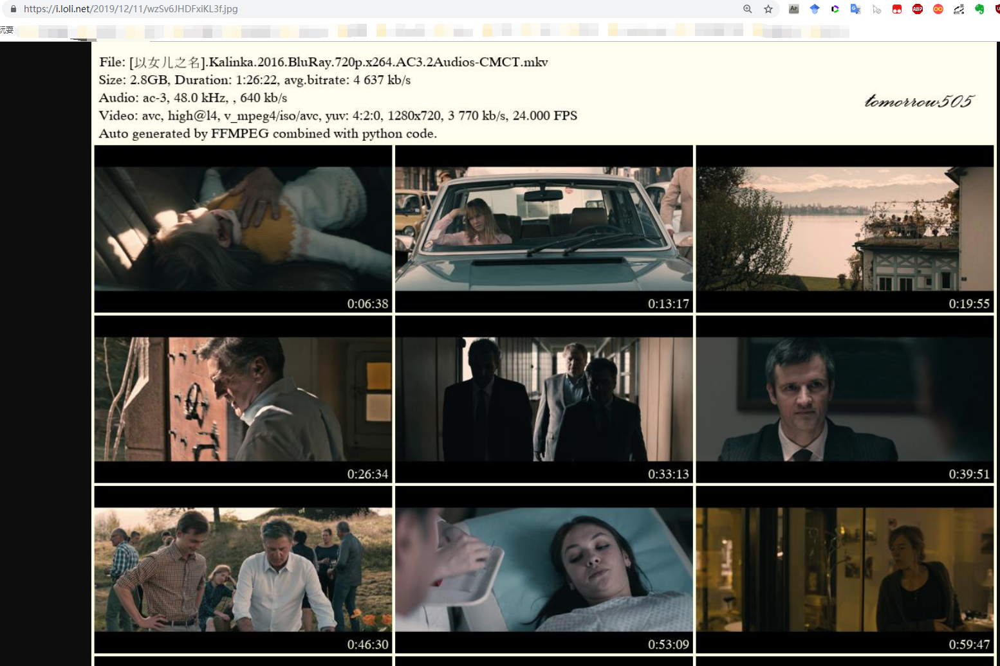
上述三个功能窗口新版已经合并为一个窗口了
2.2 Reseed辅种
2.2.1 PT助手字符串
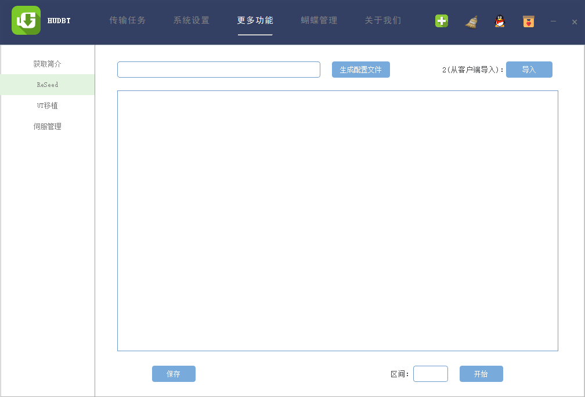
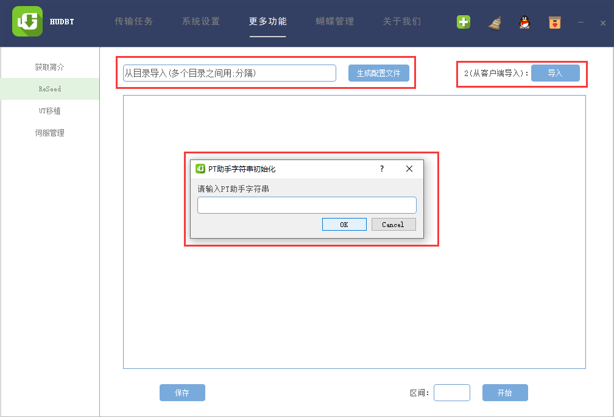
两种模式获取配置文件，1、扫描目录；2、从客户端获取。第一次运行时需要填写PT助手对应的字符串，注意，每个人的都不一样。

2.2.2 生成配置文件
以客户端为例：

生成的配置文件可以解读为当前资源列表，然后对应有序号，全称，搜索关键字，大小，创建时间，保存目录。
接下来的流程思路大概是——根据搜索关键字搜索PT助手获取大小一致的种子下载到缓存目录下的reseed目录下的torrents目录，需要设置谷歌浏览器的下载时默认为该目录并且不询问——谷歌设置高级界面。由于处理的较为简单，关键字需要修改并且点击保存。然后根据序号填写区间为m-n. 如：1174-1176则处理对应的三个资源。
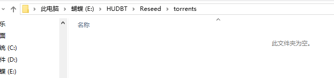
关掉下图按钮：

此功能需要谷歌浏览器自动运行，启动前关闭谷歌浏览器
2.3 UT移植
由于很多人是从ut转到qbittorrent，包括本人。第一版本就是使用的ut。ut目录一般会有缓存的种子目录和resume.dat目录，保存种子和对应的保存位置信息。我们通过解析resume.dat获取种子名称和保存的目录，解析种子比对当前电脑里是否有对应的资源是否齐全，然后将任务重新添加到qbittorrent。
解析过程需要的时长跟种子多少有关，一般会需要一定的时间
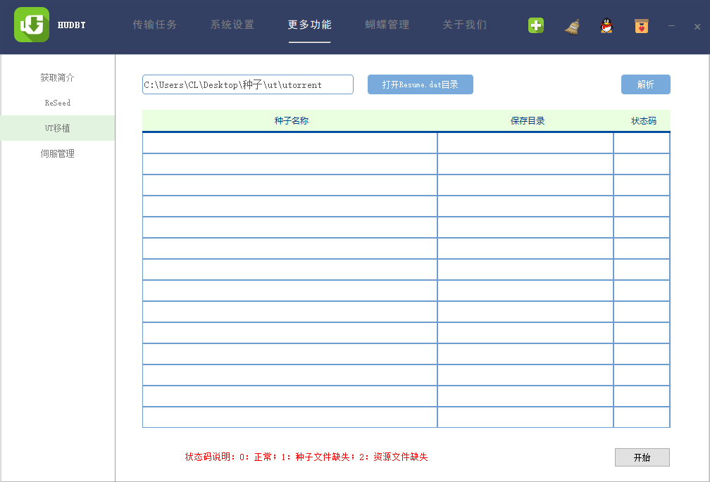
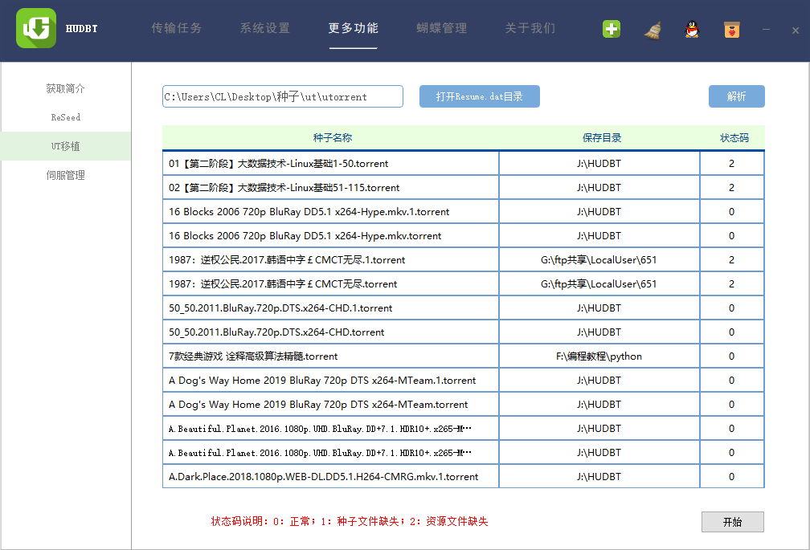
对于0表示种子文件也在，数据也在，那么就可以直接添加到qbittorrent了，添加会自动暂停，点击开始即可。
2.4 伺服管理
这个也是十分简单的，头一个是替换伺服，第二个是根据第一个伺服增加第二个伺服，第三个包括两种情况，第一栏表示删除tracker，第二栏表示根据伺服信息删除种子。

填写种子尚未上传即可删除之前被伺服删除的种子，不删除文件。